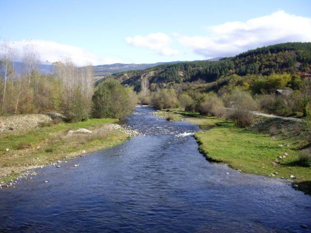

Рилска река е река в Западна България, област Кюстендил, общини Рила и Кочериново, ляв приток на река Струма. Дължината ѝ е 51км, която ѝ отрежда 83-то място сред реките на България. Отводнява южните склонове на Северозападния, северните склонове на Югозападния и западните склонове на Централния дял на Рила. На десния бряг на реката се намира най-големият и един от най-старите български манастири – Рилският, който през 1961г е обявен за исторически паметник на културата и заедно с близките си околности се оформя в национален обект на вътрешен и международен туризъм.
|
 |